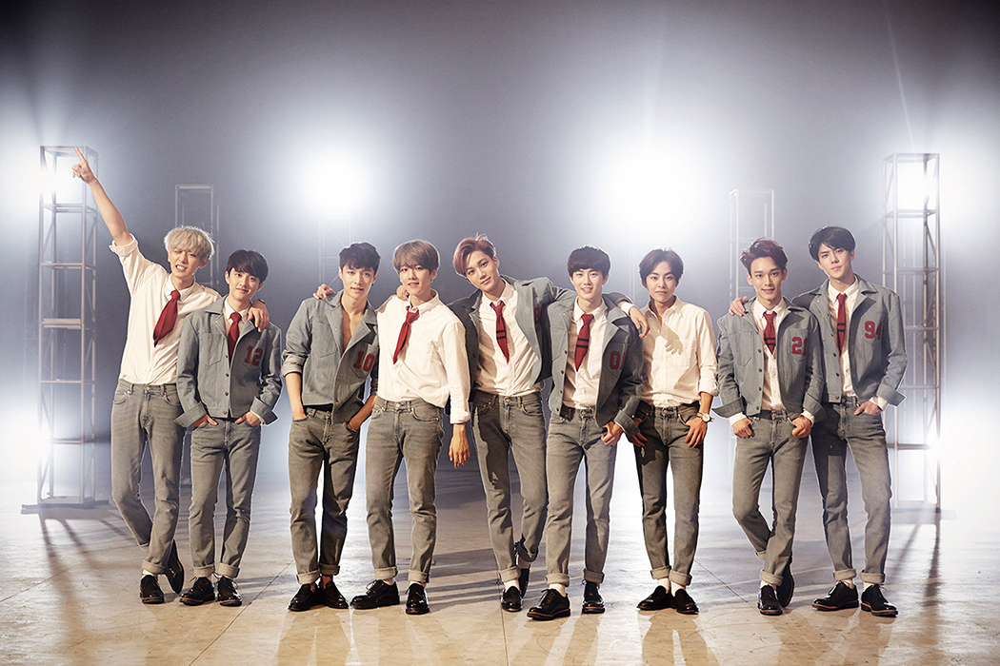

엑소의 정규 앨범은 1집 XOXO, 2집 EXODUS, 3집 EX'ACT, 4집 THE WAR, 5집 Don't mess up my Tempo, 6집 OBSSESSION 이 있다. 정규앨범 외에도 미니 앨범, 리패키지 앨범, 겨울 스페셜 앨범 등을 합하여 총 15개의 앨범을 발매했다.  엑소는 2014년 8월 5일 팬클럽 EXO-L을 개설하여 400만명이 넘는 팬덤을 소유했다. 엑소는 아이돌 활동 뿐만 아니라 드라마, 영화, 패션 등의 여러 분야에서도 큰 영향력을 가지고 있다. 엑소가 지금까지 개최했던 콘서트는 총 6개 이며 6개의 콘서트 모두 매진되었다. 특히 엑소는 고척돔 완공 후 가장 먼저 공연을 하였다. 엑소는 2012년 데뷔 후 2013년에 첫 대상을 받은 후 2018년 대상을 받아 6년 연속 대상이라는 최초, 최고의 기록을 세웠다. 엑소는 미지의 행성에서 온 초능력자 라는 세계관을 바탕으로 세계관을 이끌어 간다. 이 세계관은 엑소의 가장 큰 특징으로 자리 잡았다. 엑소는 평창 올림픽 폐막식에 무대를 가져 '국가픽' 이라는 명예를 얻게 된다. 엑소는 2019년에 데뷔 8년차로 많은 연차를 가졌지만 여전히 엄청난 팬덤과 명성을 가지고 있어 많은 인기를 누리고 있다.